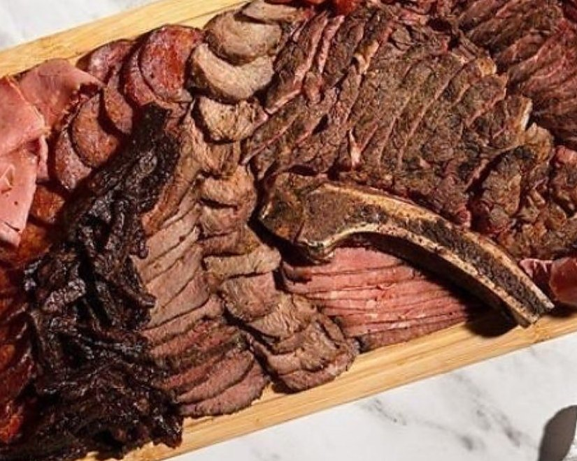

Premium meat boards, grilled to perfection.
Blazin' Boards, Jerusalem. Ordered by message, on this page.

One of their boards. Their photograph.
Premium meats, cooked and grilled to perfection.
In their words.
- What
- Premium meat boards.
- Where
- Jerusalem.
- Pay by
- Credit card, Zelle or bank transfer.
- You talk to
- The business itself. No middleman.
How it goes.
- You send a message.From this page. No account for them to make, no form for you.
- You agree the board and the day, in chat.What you want on it, how many people, when.
- You pay them the way they take it.Card, Zelle or bank transfer. Between you and them.
That's the page.
Message Blazin' BoardsPay by card, Zelle or bank transfer. You talk to the business directly.
Blazin' Boards, Jerusalem, on MyIsraelRental.